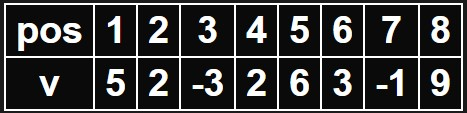
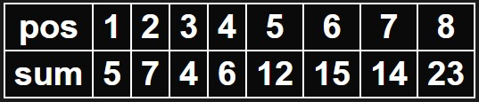

Solutia O(Q)
Pentru a putea rezolva problema intr-un timp optim, trebuie sa ne gandim cum putem raspunde la o intrebare intr-un timp cat mai scurt. Pentru a putea raspunde la o intrebare intr-un timp cat mai scurt exista mai multe metode, dar de aceasta data vom folosi notiunea de sume partiale.
Sumele partiale reprezinta o metoda prin care putem determina intr-o complexitate O(1) care este suma elementelor pe un anumit interval. Exista sume partiale aplicate pe tablouri unidimensionale, bidimensionate, tridimensionate, etc... In problema actuala trebuie sa aplicam sume partiale 1D, adica pe un tablou unidimensional.
Consideram vectorul din exemplul problemei:
Codul pentru un asemenea algoritm ar fi:
sum[i]
Reprezentare grafica a acestui algoritm ar fi si un debugger pentru a vedea in timp real valorile corespunzatoare, unde puteti scrieti dumnevoastra testele pe care vreti sa le executati si sa verificati cum decurge algrotimul, testele trebuie scrise conform enuntului problemei. Linia pos reprezinta pozitiile, notate de la 1 la N, linia v reprezinta vectorul pe care se executa algoritmul, iar sum reprezinta vectorul se sume partiale. Pe linia sum ce este colorat in verde se aduna, dupa care ce este colorat in rosu se scade;
Sumele partiale reprezinta o metoda prin care putem determina intr-o complexitate O(1) care este suma elementelor pe un anumit interval. Exista sume partiale aplicate pe tablouri unidimensionale, bidimensionate, tridimensionate, etc... In problema actuala trebuie sa aplicam sume partiale 1D, adica pe un tablou unidimensional.
Consideram vectorul din exemplul problemei:

Vom tine un vector sum[i] care va fi egal cu suma primelor i elemente. Pentru a putea crea acest vector, vom initializa vectorul sum global pentru ca toate valorile din vector sa fie 0, dupa care vom incepe parcurgerea celor N elemente din vectorul de elemente din test. Pentru a calcula sum[i] avem nevoie de o relatie de recurenta care este sum[i] = sum[i - 1] + v[i], deoarece sum[i] contine suma primelor i elemente, atunci sum[i - 1] contine suma primelor i - 1 la care mai adaugam valorea pozitie curent, adica v[i]. Conform exemplului nostru, vectorul sum ar arata asa:

Acum observam ca daca am avea o intrebare de genu: "Care este suma elementelor pe intervalul 1 y", atunci raspunsu ar fi chiar sum[y], deoarece el reprezinta suma primelor y elemente. Totusi, cum putem raspunde la orice fel de intrebare de forma: "Care este suma elementelor pe intervalul x y". Stim ca sum[y] este suma primelor y elemente, doar ca din aceasta suma cateva elemente sunt in plus, si anume primele x-1 elemente, ceea ce inseamna ca din suma primelor y elemente scadem suma primelor x - 1 elemente. Mai exact, raspunsul pentru o intrebare va fi sum[y] - sum[x - 1] care are complexitate O(1) pentru fiecare intrebare, astfel complexitatea intregului program se reduce la O(Q). Din cauza ca suma elementelor vectorului poate depasi 231, se recomanda folosirea tipului de variabila long long pentru initializarea vectorului sum. Cu toate ca acest algoritm nu suporta schimbari in vectorul nostru, este unul dintre algoritmii fundamentali ai informaticii ce poate ajuta in multe probleme.Codul pentru un asemenea algoritm ar fi:
for
(
int
i =
1; i <=
N; i++
)
sum[i]
=
sum[i -
1] +
v[i];
//
calculam suma primelor i elementeint
x, y; for
(
int
q =
1; q <=
Q; q++
){
//
luam pe rand cele Q intrebari pentru a raspunde la elecin
>>
x >>
y;
//
citim pozitiile intre care vrem sa aflam suma elementelor cout
<<
sum[y] -
sum[x -
1] <<
'\n'
;
//
afisam suma elementelor aflate intre pozitia x si y}
| pos | 1 | 2 | 3 | 4 | 5 | 6 | 7 | 8 |
|---|---|---|---|---|---|---|---|---|
| v | 5 | 2 | -3 | 2 | 6 | 3 | -1 | 9 |
| sum | 5 | 7 | 4 | 6 | 12 | 15 | 14 | 23 |
x = 0
y = 0
sum[y] = sum[0] = 0
sum[x - 1] = sum[0] = 0
ans = sum[y] - sum[x - 1] = 0